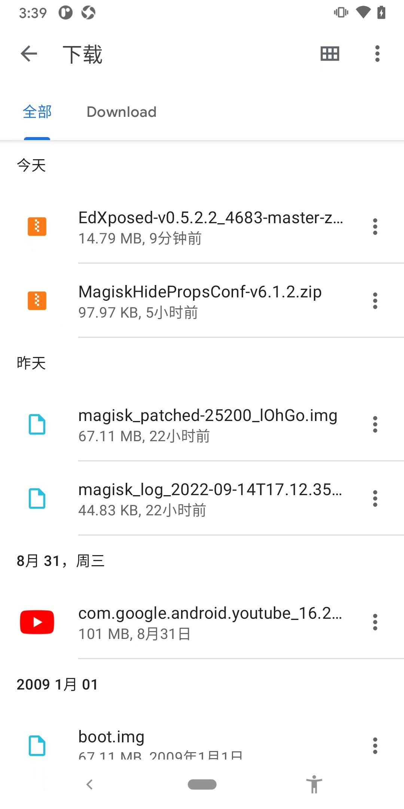

文件管理
TODO：
- 【记录】从Nox夜神模拟器中拷贝文件到Mac中
- 【已解决】安卓手机Google Pixel3用文件管理管理文件
- 【已解决】安卓手机中打开log日志文件查看内容
安卓逆向期间，常涉及到文件管理方面的内容。
文件上传和下载=导入导出文件
- 用文件管理器
文件极客
- 用命令：
adb- 概述
- （从安卓中）导出文件
adb pull <remote_android> [<local_pc>] - 导入文件（到安卓中）
adb push <local_pc> <remote_android>
- （从安卓中）导出文件
- 详解
- 概述
文件目录的关系
常见目录：
/sdcard：SD卡根目录，即普通用户保存文件的根目录/sdcard/Download：下载目录- 安卓手机中，通过
浏览器等工具下载的文件，往往默认保存在到下载目录，就是这个：/sdcard/Download
- 安卓手机中，通过
对应的查看效果：
- 文件管理器
- 文件极客
- 
- 文件极客
- 命令行
adb shellcrifan@licrifandeMacBook-Pro ~/dev/dev_tool/android/EdXposed adb shell blueline:/ $ whoami shell blueline:/ $ cd /sdcard/Download blueline:/sdcard/Download $ ls -lh total 120M -rw-rw---- 1 root everybody 14M 2022-09-15 15:30 EdXposed-v0.5.2.2_4683-master-z-debug.zip -rw-rw---- 1 root everybody 96K 2022-09-15 10:02 MagiskHidePropsConf-v6.1.2.zip -rw-rw---- 1 root everybody 64M 2009-01-01 00:00 boot.img -rw-rw---- 1 root everybody 97M 2022-08-31 11:16 com.google.android.youtube_16.29.36.apk -rw-rw---- 1 root everybody 44K 2022-09-14 17:12 magisk_log_2022-09-14T17.12.35.log -rw-rw---- 1 root everybody 64M 2022-09-14 17:18 magisk_patched-25200_lOhGo.img